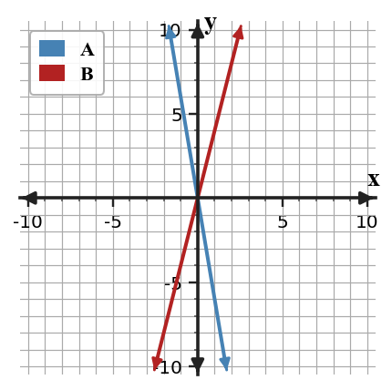
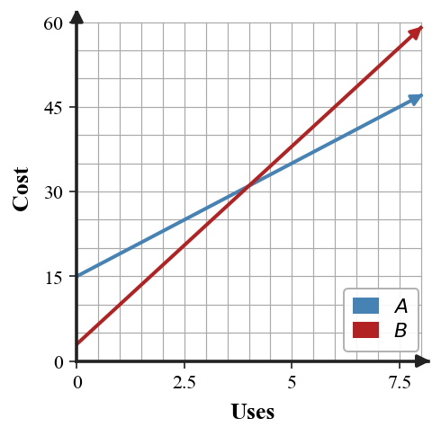
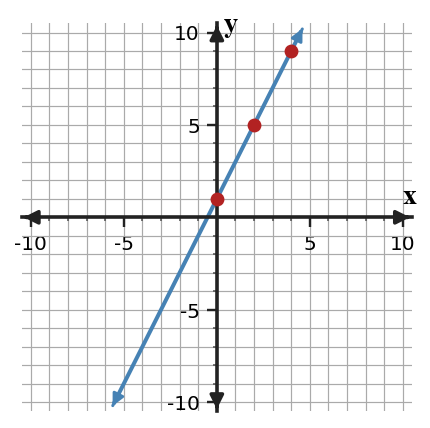

Mathematical idea: Linear relationships are easier to compare when slope and starting value are identified in each representation.
Today you will compare slopes, intercepts, and plan values across different forms. You will also critique claims using evidence from representations.
Learning Target: Students will analyze and compare linear relationships using multiple representations.
I can statements
This is a long-range preview for future lessons. Do not solve it today. Instead, annotate it individually. Circle anything familiar, underline symbols or directions that seem important, and write notes about what information you think will be needed later.
As you annotate, ask yourself: What parts (words, symbols, graphs) do you KNOW? What parts look FAMILIAR? What parts look like jibberish?
Directions
Read the introduction aloud with a partner or in a small group. As you read, annotate the text by highlighting important ideas, circling key vocabulary, and writing short notes about connections, questions, or predictions in the margins.
Two linear relationships can be compared by looking for shared features. Slope and starting value are the most useful features because they describe change and beginning amount. Once both are known, the relationships can be compared fairly.
Sometimes a relationship with a negative slope changes faster than one with a positive slope. Magnitude describes the size of the change without focusing on direction. For example, a slope of $-5$ changes faster in size than a slope of 3.
A table, a graph, and an equation may not look alike at first. If one representation gives slope while another gives values, students need to translate both into common features. This prevents a conclusion based on appearance only.
Feature comparison organizers, tables with different scales, pairs of graphs, and contextual descriptions can all support comparison. The representation may change, but the evidence should still name slope and intercept.
In real choices like competing plans, the better option can depend on the input value. A plan with a lower starting value may become more expensive later if its slope is larger.
Stop and Discuss
To compare how fast two relationships change, compare the absolute values of their slopes when the question asks for magnitude.
$$|{-6}|=6\quad\text{and}\quad |4|=4$$| Relationship | Slope | Direction | Magnitude |
|---|---|---|---|
| A | $-6$ | decreasing | 6 |
| B | 4 | increasing | 4 |

Context: Magnitude tells how many output units change per input unit, while the sign tells direction.
Relationship A has slope $-6$. Relationship B has slope 4.
Relationship C has slope 2. Relationship D has slope $-7$.
Stop and Discuss
For cost plans, the intercept is the starting fee and the slope is the cost per use.
$$A=4x+15\qquad B=7x+3$$| Uses | Plan A | Plan B |
|---|---|---|
| 0 | 15 | 3 |
| 3 | 27 | 24 |
| 6 | 39 | 45 |

Context: Plan B starts lower, but its higher slope means its cost grows faster.
Plan A costs \$15 plus \$4 per use. Plan B is shown by $y=7x+3$.
Plan C costs \$30 plus \$2 per use. Plan D is shown by $y=5x+12$.
Stop and Discuss
To compare a table and an equation, calculate the table slope and starting value first.
| $x$ | 0 | 2 | 4 | 6 |
|---|---|---|---|---|
| Table $y$ | 6 | 10 | 14 | 18 |
Context: The equation grows faster, but the table starts higher.
Compare the table to $y=3x+4$.
| $x$ | 0 | 2 | 4 | 6 |
|---|---|---|---|---|
| $y$ | 6 | 10 | 14 | 18 |
Compare the table to $y=x+10$.
| $x$ | 0 | 3 | 6 | 9 |
|---|---|---|---|---|
| $y$ | 4 | 10 | 16 | 22 |
Stop and Discuss
When comparing a graph to a table, read two points from the graph and two columns from the table.

| $x$ | 0 | 2 | 4 | 6 |
|---|---|---|---|---|
| Table $y$ | 2 | 8 | 14 | 20 |
Context: The table relationship increases by 3 units per input, so it changes faster than the graphed line.
Compare the graph shown with the table.
| $x$ | 0 | 2 | 4 | 6 |
|---|---|---|---|---|
| $y$ | 2 | 8 | 14 | 20 |
A graph has slope $-1$ and $y$-intercept 9. Compare it to the table.
| $x$ | 0 | 2 | 4 | 6 |
|---|---|---|---|---|
| $y$ | 7 | 3 | $-1$ | $-5$ |
Stop and Discuss
Comparing linear relationships means turning each representation into features that can be compared. Slope and starting value are the most common features to use.
Equations, tables, graphs, and contexts may look different, but each can reveal rate of change and intercept information. A fair comparison uses the same type of evidence for both relationships.
A common error is deciding which relationship is greater from one input value instead of comparing slopes and starting values.
Strong understanding means you can support a comparison claim with evidence from both representations and recognize when the better choice changes by input value.
Look back at the future task. Do not solve it yet. Highlight one part that makes more sense now than it did at the beginning. Circle one part that still feels unfamiliar. Write one sentence about what representation you would look at first.
What is one idea about comparing linear representations you understand better now than at the start of class? Write at least one complete sentence.
What is one thing about comparing linear representations you still want to understand or practice? Be specific — name the idea, not just "everything."